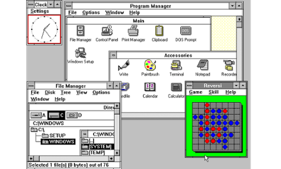

O que ê um software ?
Software é uma sequência de instruções escritas para serem interpretada s por um computador para executar tarefas específicas. Também pode ser definido como os programas, dados e in struções que comandam o funcionamento de um computador, smartphone, tablet e outros dispositivos eletrônicos.
Windows, MAC OS X, iOS, Android.
*Sistemas Operacionais.
O sistema operacional é um software, ou conjunto de softwares, cuja função é administrar e gerenciar os recursos de um sistema, desde componentes de hardware e sistemas de arquivos a programas de terceiros, estabelecendo a interface entre o computador e o usuário.
. Unix, MS-DOS,OS/2

software de programação
Software é um componente do computador que não pode ser tocado, porém é o que faz o sistema funcionar, ou seja, é considerado o componente capaz de realizar ou executar qualquer tarefa dentro de qualquer sistema computacional.
Adobe Dreamweaver, Lázaro, Delphi
software de sistema
Na informática , é denominado software de sistema ou software base para a série de programas pré-instalados no computador ou sistema computacional e que permitem a interação com o Sistema Operacional (o software que rege o funcionamento de todo o sistema e garante sua operabilidade) , para apoiar outros programas e garantir o controle digital do hardware .
Carregadores de programa, Sistemas operacionais, Programas utilitários básicos.
software de aplicação
Na computação , software aplicativo, programas aplicativos ou em alguns casos aplicativos são entendidos como o conjunto de programas de computador geralmente instalados no sistema pelo usuário e projetados para realizar um objetivo específico e específico, de natureza recreativa, instrumental, comunicativa , informativo, etc.
Google Chrome, Escritório aberto, Chamada à ação
Software livre
Software Livre é chamado de programas de computador que dão a seus usuários , por decisão explícita de seus programadores e designers, acesso ao código- fonte ou código de programação original em que foram fabricados , para que possam copiá-los, modificá-los, personalizá-los e distribuí-los livremente
GNU / Linux,Chrome OS, VALO-CD
Software web ou web App
São softwares hospedados em servidores online e que podem ser acessados através dos navegadores de internet, como Microsoft Edge, Mozilla Firefox, Google Chrome, entre outros. Costumam ter funcionalidades semelhantes a de outros programas, porém, dispensam a necessidade de download e requerem conexão com a internet para serem usados.
Google Drive, Gmail, Evernote Web, Microsoft Office 365, Canva Web.
Software de Inteligência Artificial
Inteligência artificial é a capacidade de dispositivos eletrônicos de funcionar de maneira que lembra o pensamento humano.
Aplicativos de Rotas, Assistentes Virtuais, E-mail.

Windows 1
Aqui começa a história da Microsoft com seus sistemas operacionais Windows. A primeira versão do SO foi lançada em novembro de 1985 e foi a tentativa inicial da companhia em entregar uma interface gráfica em 16 bits. O Windows 1 foi construído sobre o MS-DOS e seu funcionamento se apoiava bastante nas entradas inseridas nas linhas de comando do sistema. Apesar disso, a Microsoft já havia colocado suporte ao mouse, incluindo também um jogo para “ensinar” as pessoas a utilizarem esse novo periférico.

Windows 2
Dois anos depois da estreia no mercado de sistemas operacionais, a Microsoft resolveu fazer o lançamento do Windows 2 em dezembro de 1987. A grande inovação desse software era a possibilidade de as janelas sobreporem umas às outras, funcionalidade que parece piada nos dias de hoje. Também foi incluída a possibilidade de minimizar e maximizar as janelas; além disso, o conhecido Painel de Controle, que reunia as principais ferramentas do sistema, também fez a sua estreia no Windows 2. Outras duas ferramentas que apareceram debutaram nessa versão e permanecem até hoje, são elas o Word e o Excel — pertencentes ao Pacote Office.

Windows 3
Lançado em 1990, esse foi o primeiro SO da Microsoft a exigir um disco rígido para ser instalado. Também foi aquele que despertou a atenção do mercado para o nome “Windows”, colocando-o de vez na disputa pela popularidade. A grande inovação do Windows 3 diz respeito aos programas do MS-DOS que agora podiam ser executados em uma janela normal, dando bastante flexibilidade aos que não se adaptavam logo de cara com a interface gráfica do software. O suporte a 256 cores e o jogo “Paciência” (Solitaire, em inglês) foram outras novidades importantes dessa versão do SO.
Windows 3.1
Apesar de os Windows 1 e 2 também terem versões derivadas com um “ponto”, foi o Windows 3.1 que precisou ser separado do 3 por causa de suas atualizações significativas. A principal delas foi a introdução da fonte TrueType, transformando o SO, pela primeira vez, em uma plataforma de publicação. O Windows 3.1 exigia 1 MB de memória RAM para ser executado e, depois de instalado, ocupava apenas 15 MB do disco rígido. O jogo “Campo Minado” fez a sua estreia nesta versão do sistema operacional da Microsoft.
Windows 95
Como o nome sugere, esse SO da Microsoft foi lançado no ano de 1995 e trouxe, pela primeira vez, o Menu Iniciar e a Barra de Ferramentas tão familiares para todos nós. O Windows 95 também inaugurou o conceito de “plug and play”, facilitando bastante a vida de quem precisasse utilizar um periférico diferente. Foi nesta versão que o Internet Explorer fez a sua estreia, mas chegou apenas em um pacote adicional lançado posteriormente. A arquitetura de 32 bits também começou a aparecer nesse SO, e o MS-DOS ainda era necessário para executar uma série de funções do sistema e acessar muitos de seus recursos.

Windows 98
Lançado em 1998, o Windows 98 foi construído sobre a versão anterior e trouxe uma série de novidades. Entre elas estão o IE 4, o Outlook Express, o Windows Address Book, o Microsoft Chat e o NetShow Play, que posteriormente seria substituído pelo Windows Media Player. Com exceção do IE, do Outlook e do WMP, todas as outras ferramentas já foram aposentadas ou substituídas. O Windows 98 introduziu o recurso de avançar e voltar na navegação, além da barra de endereço no Windows Explorer. O suporte ao padrão USB também foi bastante aprimorado, dando início a uma adoção generalizada desse formato.

Windows ME
O Windows Millennium Edition foi a última versão do SO baseada no MS-DOS e considerada por muitos como a pior de todas. Ela foi lançada em 2000 e teve uma variante que foi especialmente desenvolvida para equipar servidores, o Windows 2000. O IE 5.5, o Windows Media Player 7 e o Windows Movie Maker fizeram a sua estreia no Millennium Edition. O recurso de autocompletar também fez a sua primeira aparição nesse sistema operacional, mas isso não foi suficiente para salvá-lo das críticas por causa dos bugs e problemas de instalação que apresentava.

windows xp
Alguns argumentam que esta seja a melhor versão do sistema operacional da Microsoft. Ela foi lançada em outubro de 2001 e foi a que mais durou no mercado, recebendo suporte até o mês de abril de 2014 — 13 anos após a sua estreia no segmento. O SO ainda se mostra relativamente popular, estando presente em mais de 20% dos computadores de todos os adeptos do SO. As principais novidades foram a repaginada no visual e a estabilidade do sistema, que agradou e conquistou milhões de usuários ao redor do mundo.

Windows Vista
Ao contrário do seu antecessor, o Windows Vista recebeu duras críticas dos consumidores que tiveram a infelicidade de utilizá-lo. O sistema apresentava uma série de problemas e funcionalidades mal-implementadas, sendo que uma das principais reclamações foi referente ao UAC ou User Account Control ("Controle de Contas do Usuário"). Apesar disso, o Windows Vista trouxe um visual moderno que apostou na transparência e recursos visuais bem-chamativos, como gadgets na Área de Trabalho. No entanto, esses também foram recursos que desfavoreceram o SO por exigirem muito do hardware da máquina, limitando a sua atuação em computadores mais potentes.

Windows 7
Vencendo com facilidade a liderança de sistemas operacionais mais utilizados do mercado, o Windows 7 disputa o topo do ranking na preferência de usuários com o XP. Lançado em 2009, esse SO trouxe mudanças visuais pequenas em relação ao seu antecessor, mas é mais rápido, estável e fácil de utilizar. Mais da metade da população mundial que tem acesso a um computador utiliza o Windows 7 como sistema operacional principal em sua máquina. Isso mostra como a Microsoft acertou em cheio com essa versão de seu software.

Windows 8
Lançado em 2012, o Windows 8 foi a tentativa mais radical da Microsoft de alterar o visual do seu sistema operacional. A mudança foi motivada por causa da chegada dos dispositivos que respondem ao toque, eliminando, por causa disso, o menu Iniciar e dando lugar a uma tela totalmente nova que se baseia no uso de tiles (pequenos quadrados que representam um programa). A mudança na aparência não agradou a todos, o que culminou no “fracasso” do sistema operacional. Apesar disso, o Windows 8 é ligeiramente mais rápido do que o seu antecessor e trouxe muitas novidades, como o suporte ao USB 3.0 e a Loja do Windows. Uma versão para dispositivos móveis e com suporte para processadores ARM, batizada de Windows RT, também foi lançada, mas não fez o sucesso que a companhia esperava.

Windows 8.1
Trazendo mudanças sutis em relação ao seu antecessor, o Windows 8.1 veio em resposta às reclamações das pessoas por causa das alterações visuais que o SO sofreu. Por causa disso, a Microsoft decidiu retroceder e trazer de volta o botão do menu Iniciar. Além disso, as pessoas podiam escolher iniciar o computador diretamente a partir da Área de Trabalho, o que não era possível com o Windows 8. Não houve mudanças significativas em relação à estabilidade e à velocidade do sistema.

Windows 10
Anunciado no dia 30 de setembro de 2014, o Windows 10 acabou de ter uma versão de testes liberada para o público. Ainda é muito cedo para dizer se essa variante do sistema fará sucesso, mas a Microsoft tem demonstrado que está ouvindo o feedback dos consumidores. Confira nosso artigo especial que conta as principais novidades que a última versão do sistema operacional da empresa trará para nós.